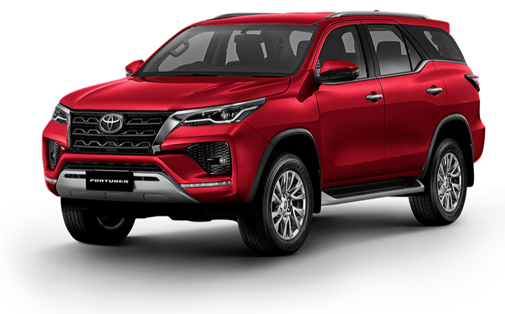
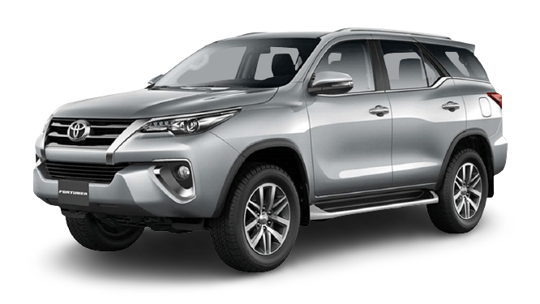
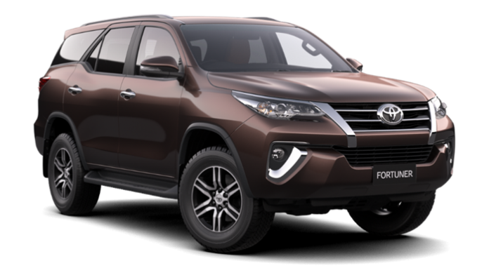
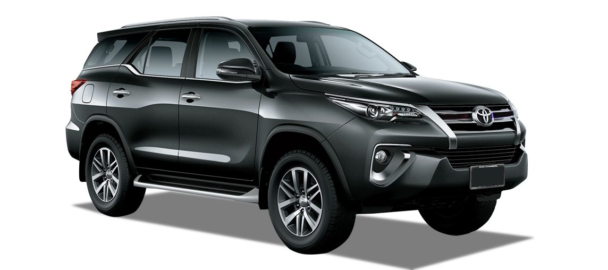
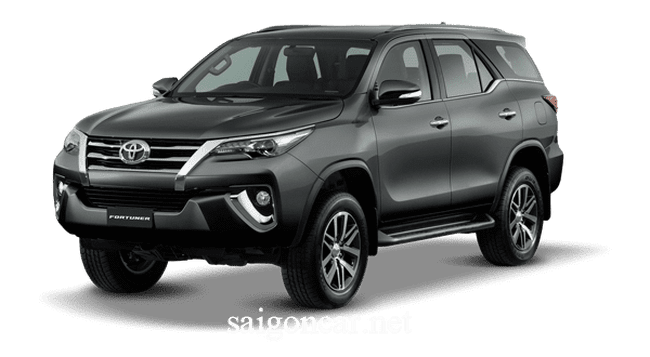
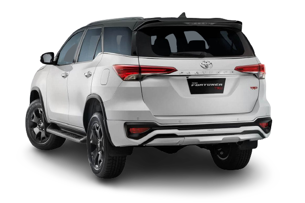

Spesifikasi
Toyota fortuner tersedia dalam pilihan mesin 12 diesel dan 2 petrol di indonesia. SUV ini hadir dalam 14 varian. Toyota fortuner tersedia dengan transmisi manual dan otomatis tergantung variannya. Fortuner merupakan SUV 7 seater dengan panjang 4795 mm, lebar 1855 mm, wheelbase 2745 mm.
Konfigurasi
Varian tertinggi dari toyota fortuner hadir dengan mesin diesel 2393 cc, yang mampu menghasilkan tenaga hingga 148 hp dan torsi puncak 400 Nm. Fortuner 2.4 VRZ AT 4x4 berkapasitas 7 penumpang dibekali juga dengan transmisi 6-speed automatic. Sistem keamanannya dibekali central locking & power door locks.
Kenyamanan
Keselamatan
Terdapat airbag bagian depan dan terdapat fitur child safety locks. Mengususng teknologi EDB (Electronic Brake Distribution). Terdapat kamera belakang dan sensor parking beserta crash sensor. Pelindung benturan depan, benturan samping dan pengingat pintu terbuka.
Keamanan
Terdapat central locking dan power door locks serta mengusung teknologi anti theft device dan memiliki fitur alarm mobil dan engine immobilizer.
Eksterior
Memiliki adjustable headlights, lampu kabut depan, dan kaca spion elektrik. Velg yang digunakan sudah menggunakan velg alloy. Jenis rem depan ventilated discs dan rem belakang discs.